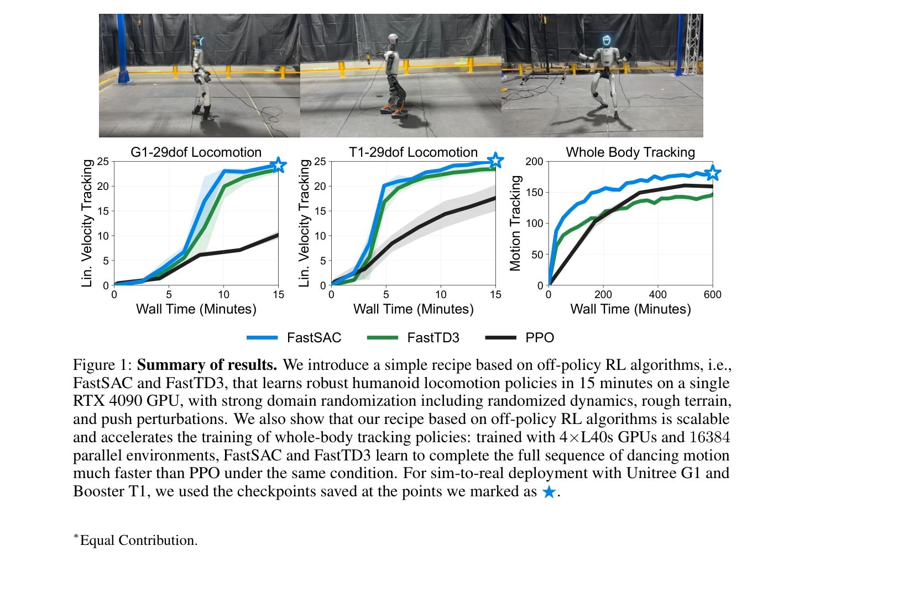
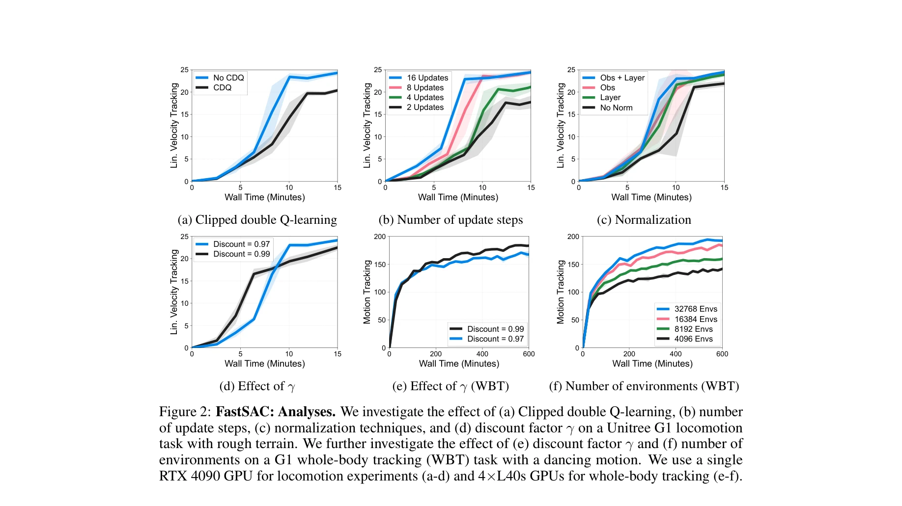

저자: Younggyo Seo, Carmelo Sferrazza, Juyue Chen, Guanya Shi, Rocky Duan, Pieter Abbeel | 날짜: 2025-12-01 | URL: https://arxiv.org/abs/2512.01996

Figure 1: Summary of results. We introduce a simple recipe based on off-policy RL algorithms, i.e.,
이 논문은 FastSAC와 FastTD3라는 off-policy RL 알고리즘을 기반으로 단일 RTX 4090 GPU에서 15분 이내에 humanoid 로봇의 보행 정책을 학습할 수 있는 실용적인 레시피를 제시한다.
Figure 1: Summary of results. We introduce a simple recipe based on off-policy RL algorithms, i.e.,

Figure 2: FastSAC: Analyses. We investigate the effect of (a) Clipped double Q-learning, (b) number
총평: 이 논문은 off-policy RL을 humanoid 제어에 효과적으로 적용하기 위한 실용적이고 체계적인 레시피를 제공하며, 15분의 빠른 훈련 시간과 실제 로봇 배포를 통해 sim-to-real 개발 사이클의 혁신을 보여준다. 오픈소스 구현 제공으로 산업 및 학계에 즉시 영향을 미칠 수 있다.